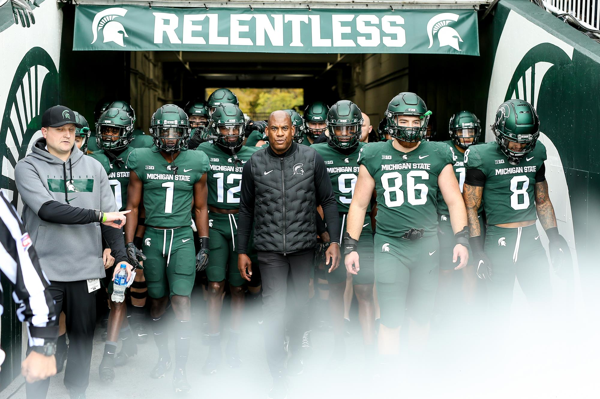

Michigan State Football is one of the most anticipated sporting events
in the state of Michigan. East Lansing is a great place to be and
experience throughout the football season, whether you like to tailgate,
socialize with friends and family, or even watch the game. The Spartans
is part of the Big Ten Conference and has a total of six national
championships. As most people know, the Spartans has acquired a new
coach, Mel Tucker, in 2020. He has taken the team to a bowl game
already and getting a win in the end of 2021. He has recently
signed a 95-million-dollar contract to be the head coach for the
next 10 years. The team has had a good last two seasons but
this year the team hasn’t been what the fans expected them to be. Most
fans are complaining about the coaching staff, and some are complaining
about certain players. The team's current record is 3 wins and 4 loses at
this point in their season. Their next game is against their biggest rival, University of
Michigan. The Wolverines has been dominating this season
so the match up during the end of October is going to be a good one.
Most Recent Bowl Games
Year
Bowl
Opponent
Result
2018
Redbox Bowl
Oregon
L 6-7
2019
Pinstripe Bowl
Wake Forest
W 27-21
2021
Peach Bowl
Pittsburgh
W 31-21

Blog 2: Apex Legends
Jonathan Ayoub
One video game that has dominating the battle royale scene has
been Apex Legends. Apex Legends is a free to play battle
royale-hero shooter game. This game was developed b y Respawn
Entertainment and published by EA. The game was released back
in 2019 but has been growing every day. This game supports
cross-platform play which includes PC, Consoles, and various
other gaming devices that are up to date. Recently, Apex
Legends Mobile was released in May 2022 for Android and IOS.
Within this game, players can assemble a team of two or three
and select characters with special abilities that are known as
“Legends”. The game has two game modes which are Battle Royale
and Arenas. The battle royale game mode is what they are known
for competitively. Usually there are 20 teams of three in this
game mode and their goal is to search for weapons and supplies
and defeat other enemy teams by using their skills and strategies
to be the last team standing. To enable short game times, there is
a ring that closes the map to a certain location to make sure the
game ends and doesn’t last forever. Arenas on the other hand is a
three-player squad game that is like a deathmatch over a series of
rounds. After a team reaches 3 wins and 2 points ahead, they end
up winning the game.